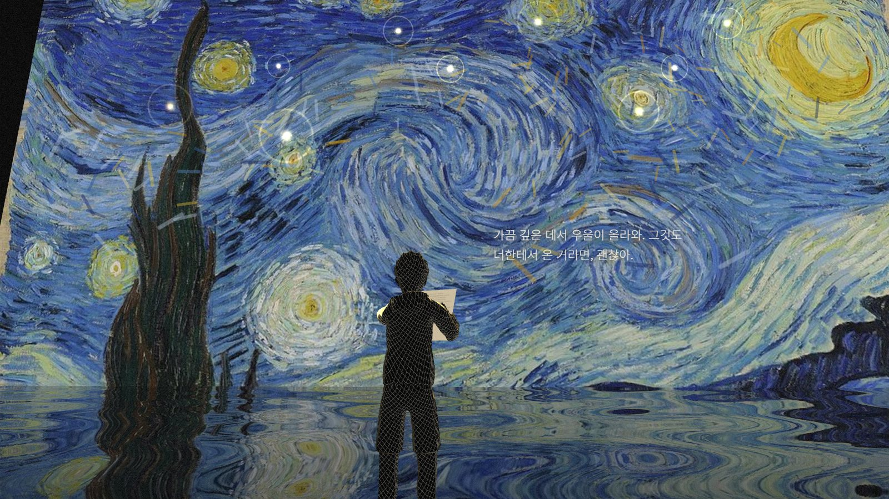
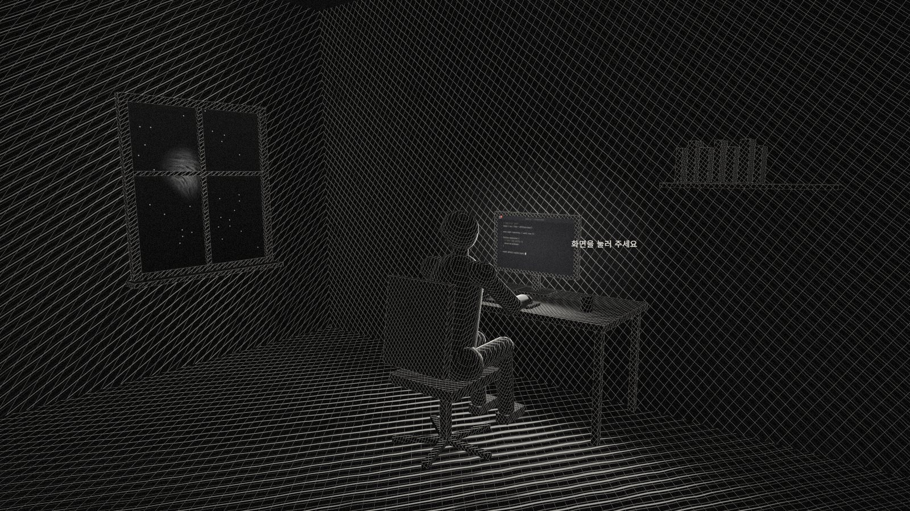
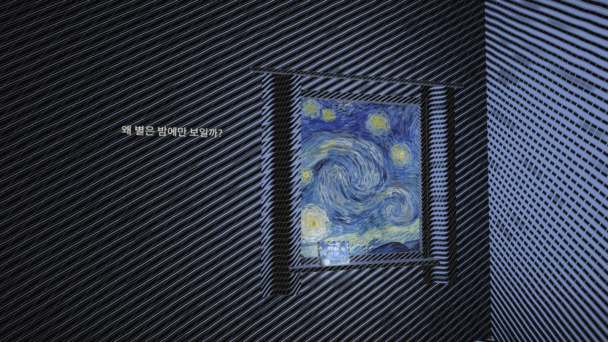
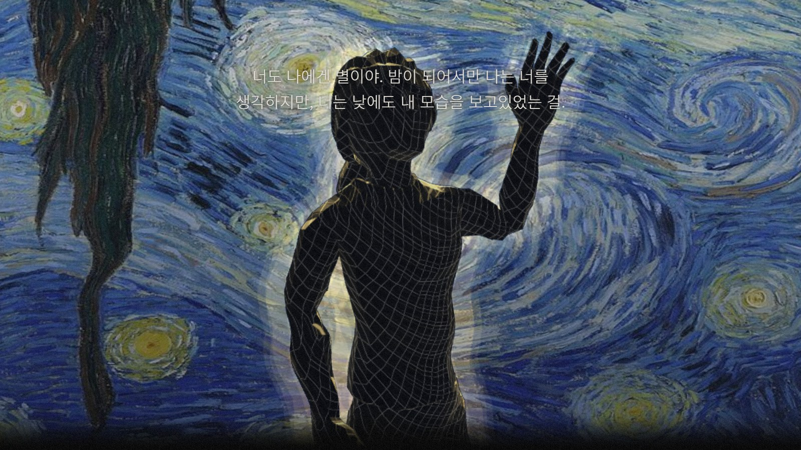

인식은 이미 있던 것을 알아보는 일입니다. 낮에도 별은 빛납니다.
인상주의는 사물을 아는 대로가 아니라 눈에 비친 그대로 그렸습니다. 모네 「인상, 해돋이」(1872)의 해는 흑백으로 바꾸면 거의 사라집니다. 밝기가 아니라 색으로만 알아보는 빛이기 때문입니다. 고흐는 「별이 빛나는 밤」(1889)을 밤이 아니라 낮에 그렸습니다(MoMA). 별은 보이지 않을 때에도 그 자리에 있었습니다. 이 작품은 어릴 적의 나를 되돌아보고, 지금의 나를 만든 것이 그 아이였다고 인정하는 이야기입니다.
저는 저에게 익숙해지기만 했지, 저를 설명하는 법을 몰랐습니다. 가장 좋아하는 작품이 무엇이냐는 질문에도 바로 답하지 못했습니다. 바쁘게 사는 동안 나를 만든 것은 보이지 않는 곳으로 밀려나 있었습니다.
돌아보니 배경화면도, 꿈속의 방도, 글씨체도 모두 2013년 처음 간 미술관에서 본 그림 한 장을 가리키고 있었습니다. 나를 설명하는 법은 나를 만든 빛을 찾는 것이었습니다. 그래서 이 편지는 나에게 쓰는 편지가 아니라, 나를 만든 '너', 어린 나에게 쓰는 편지가 되었습니다.
편지 속 '너'가 누구인지는 끝까지 말하지 않습니다. 밤늦게 혼자 코딩하는 흑백의 방, 임시보관함에 보내지 않은 편지 1이 빨갛게 켜집니다. 화면을 누를 때마다 한 줄씩 찍히는 편지는 모니터에서 창 옆 벽으로, 창밖의 별밤으로 번져 가고, 마침내 방은 그림이 됩니다. 별이 빛나는 밤 속에서 편지를 다 읽고 접은 어른이 호수를 내려다보면, 물속에서 그 아이가 손을 흔듭니다. 내 이야기를 하는 것 같지만, 사실은 네가 없으면 성립하지 않는 나에 대한 편지입니다.


